cacctmgr 管理用户/账户信息
Warning
This document is a work in progress and may contain inaccuracies or incomplete information. Please refer to the official documentation for the most accurate and up-to-date details.
cacctmgr 可以管理账户/用户信息，包括添加账户/用户、删除账户/用户、查找账户/用户。
CraneSched作业调度系统中有四个用户角色：
- 系统管理员（Admin）：一般为root用户，可以增删查改任何账户和用户信息
- 平台管理员（Operator）：对账户系统具有完全权限
- 账户调度员（Coordinator）：对与自身同一账户下的用户以及对自身账户的子账户具有操作权限，包括添加用户
- 普通用户(None)： 除了查询功能外不具备其他权限，能够查询与自身同一账户下的信息，不可以修改所有用户和账户信息
主要参数
- -h/--help: 显示帮助
- --json 以 json 格式输出
- -C/--config string： 配置文件路径（默认为"/etc/crane/config.yaml"）
- -v/ --version cacctmgr 命令的版本
主要命令
- help：显示帮助
- add: 添加实体（实体包括QoS、账户、用户）
- block：禁用该实体，使其无法使用
- delete：删除实体
- modify：修改实体
- show：显示一类实体的所有记录
- unblock：解除禁用
- completion：自动补全适用于指定 Shell 的脚本
1. 添加
1.1 添加qos
主要参数
-
-D/--description string： qos描述信息
-
-h/--help： 帮助
-
-c/--max_cpus_per_user uint32： 默认为10
-
-J/--max_jobs_per_user uint32
-
-T/--max_time_limit_per_task uint： 以秒为单位的时间（默认3600）
-
-N/--name string：qos的名称
-
-P/--priority uint32：默认为1000
-
例：
-
SQL cacctmgr add qos -N=test-qos -D="test qos"
1.2 添加账户
主要参数
- -Q/--default_qos string： 账户默认qos
- -D/--description string：账号描述信息
- -h/--help： 帮助
- -N/--name string： 账户的名称
- -P/--parent string：此账户的父账户
- -p/--partition strings： 该账号可以访问的分区列表
- -q/--qos_list strings：账号可以访问的qos列表
- 例：（添加账户PKU并添加PKU的子账户ComputingCentre）
1.3 添加用户
系统管理员可以添加任意账户的用户， 账户管理员可以添加同一账号下的新用户。添加的用户需要先有uid（先使用useradd在linux系统添加该用户）。
主要参数
-
-A/--account string： 此用户所属的父账户
-
-c/--coordinate：设置用户是否为父账号的账户调度员（coordinator）
-
-h/--help： 帮助
-
-L/--level string：设置用户权限(none/operator/admin) (默认为 "none")
-
-N/--name string： 用户的名称
-
-p/--partition strings： 该用户可以访问的分区列表
-
例：
-
SQL useradd CS -
Plaintext cacctmgr add user -N=CS -A=PKU -p=CPU,GPU -L=admin # -p参数指明用户可用分区为CPU和GPU（分区必须同时为父账户PKU的可用分区），分区的allowed_qos_list与default_qos信息不支持指定，默认从父账户PKU中继承 -
Plaintext cacctmgr add user -N=lab -A=ComputingCentre # 未指明-p参数，partition与qos信息都从父账户ComputingCentre中继承
2. 删除
2.1 删除用户
2.2 删除账户
仅系统管理员可以删除账户，删除账户时会检查账户下是否还有子账户或者用户，如果有则不允许删除，防止产生游离的用户，需要将其子账户和用户都设置在新账户下。
2.3 删除qos
3. 禁用
3.1 阻止用户或账户
主要命令
- account： 阻止账户
- user：阻止账户下的用户
4. 解禁
4.1 解除阻止用户或账户
主要命令
- account： 解除阻止账户
- user：解除阻止账户下的用户
5. 查询
5.1 查找用户
所有用户均可以使用查询功能
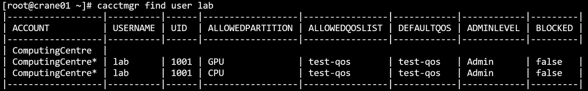
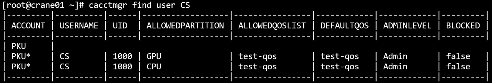
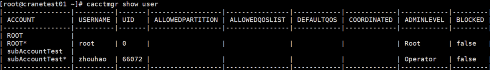
5.2 查找账户
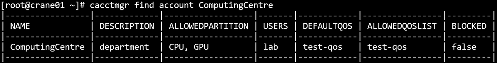
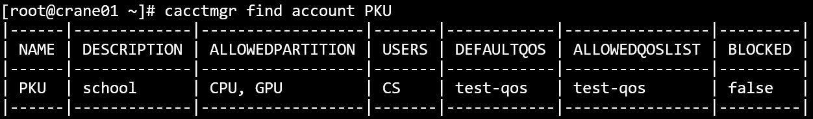
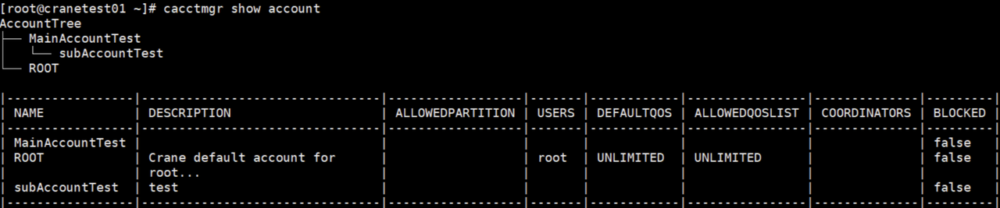
5.3 查找qos
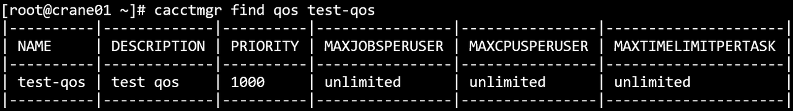
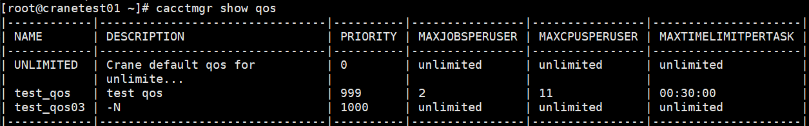
6. 修改
6.1 修改账户
系统管理员可以修改任意信息， 账户管理员可以修改本身账户的信息，但不能更改账户的父账户。
主要参数
-
--add_allowed_partition string：将新项添加到允许的分区列表
-
--add_allowed_qos_list strings：将新项添加到允许的qos列表
-
-Q/--default_qos string： 修改账户默认qos
-
--delete_allowed_partition string：从允许的分区列表中删除特定项目
-
--delete_allowed_qos_list strings：从允许的qos列表中删除特定项
-
-D/--description string：修改账户的描述信息
-
-F/--force： 强制操作
-
-h/--help： 帮助
-
-N/--name string：需要进行修改的账户名称
-
--set_allowed_partition strings：设置允许的分区列表的内容
-
--set_allowed_qos_list strings：设置允许的qos列表的内容
-
例：
-
Plaintext cacctmgr modify account -N=ComputingCentre -D="Located in PKU"
6.2 修改用户
系统管理员可以修改任意信息， 账户管理员可以修改同账户下用户的信息，但不能更改用户的账户。
主要参数
-
-A/--account string：设置用户使用的帐号
-
--add_allowed_partition strings：将新项添加到允许的分区列表
-
--add_allowed_qos_list string：将新项添加到允许的qos列表
-
-L/--admin_level string：设置用户管理权限（none/operator/admin）
-
-Q/--default_qos string： 修改账户默认qos
-
--delete_allowed_partition strings：从允许的分区列表中删除特定项目
-
--delete_allowed_qos_list string：从允许的qos列表中删除特定项目
-
-F/--force： 强制操作
-
-h/--help： 帮助
-
-N/--name string：需要进行修改的用户名称
-
-D/--default-account string：修改用户的默认账号
-
-p/--partition string：被修改的分区，如果不显式设置该参数，默认修改所有分区
-
--set_allowed_partition strings：设置允许的分区列表的内容
-
--set_allowed_qos_list strings：设置允许的qos列表的内容
-
例
-
SQL cacctmgr modify user -N=lab -A=ComputingCentre -L=operator --delete-allowed-partition GPU -
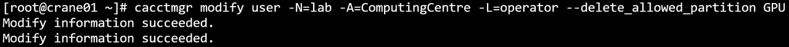
-
-
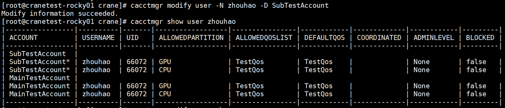
6.3 修改qos
主要参数
- -D/--description string：修改qos的描述信息
- -h/--help： 帮助
- -c/--max_cpus_per_user uint32：(默认10)
- -J/--max_jobs_per_user uint32
- -T/--max_time_limit_per_task uint：以秒为单位的时间（默认 3600）
- -N/--name string： 需要进行修改的qos名称
- -P/--priority uint32：(默认1000)
7. 显示
7.1 显示账户树
系统管理员会显示数据库所有根账户的账户树， 账户管理员和用户会显示本身账户的账户树。
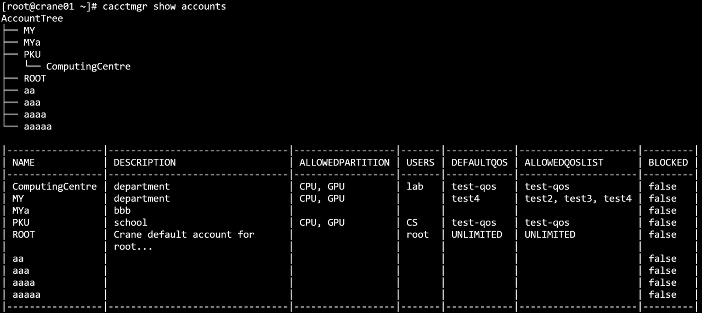
7.2 显示用户
系统管理员会显示所有用户， 账户管理员和用户会显示同一账户下的所有用户。
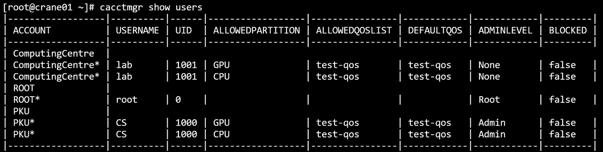